Creates scatter plots with support for size mapping, color mapping, highlighting specific points, and custom transformations. Supports splitting by groups and faceting.
Usage
ScatterPlot(
data,
x,
y,
size_by = 2,
size_name = NULL,
color_by = NULL,
color_name = NULL,
color_reverse = FALSE,
split_by = NULL,
split_by_sep = "_",
shape = 21,
alpha = NULL,
border_color = "black",
highlight = NULL,
highlight_shape = 16,
highlight_size = 3,
highlight_color = "red",
highlight_alpha = 1,
xtrans = "identity",
ytrans = "identity",
theme = "theme_ggforge",
theme_args = list(),
palette = NULL,
palcolor = NULL,
facet_by = NULL,
facet_scales = "fixed",
facet_ncol = NULL,
facet_nrow = NULL,
facet_byrow = TRUE,
aspect.ratio = 1,
legend.position = "right",
legend.direction = "vertical",
title = NULL,
subtitle = NULL,
xlab = NULL,
ylab = NULL,
combine = TRUE,
nrow = NULL,
ncol = NULL,
byrow = TRUE,
seed = 8525,
axes = NULL,
axis_titles = axes,
guides = NULL,
design = NULL,
...
)Arguments
- data
A data frame containing the data to plot
- x
Column name for x-axis variable
- y
Column name for y-axis variable
- size_by
Column name to use for point size, or a numeric value for fixed size.
- size_name
Name for the size legend.
- color_by
Column name to use for point color. Can be numeric or categorical.
- color_name
Name for the color legend.
- color_reverse
Whether to reverse the color direction.
- split_by
Column name(s) to split data into multiple plots
- split_by_sep
Separator when concatenating multiple split_by columns
- shape
Shape of points (default 21 which has fill).
- alpha
Transparency level (0-1)
- border_color
Color for point borders, or TRUE to match fill color.
- highlight
Vector of row indices/names or expression string to highlight points.
- highlight_shape
Shape for highlighted points.
- highlight_size
Size for highlighted points.
- highlight_color
Color for highlighted points.
- highlight_alpha
Alpha for highlighted points.
- xtrans
Transformation for x-axis (e.g. "log10", "sqrt").
- ytrans
Transformation for y-axis (e.g. "log10", "sqrt").
- theme
Theme name (string) or theme function
- theme_args
List of arguments passed to theme function
- palette
Color palette name
- palcolor
Custom colors for palette
- facet_by
Column name(s) for faceting the plot
- facet_scales
Scales for facets: "fixed", "free", "free_x", "free_y"
- facet_ncol
Number of columns in facet layout
- facet_nrow
Number of rows in facet layout
- facet_byrow
Fill facets by row (TRUE) or column (FALSE)
- aspect.ratio
Aspect ratio of plot panel
- legend.position
Legend position: "none", "left", "right", "bottom", "top"
- legend.direction
Legend direction: "horizontal" or "vertical"
- title
Plot title
- subtitle
Plot subtitle
- xlab
X-axis label
- ylab
Y-axis label
- combine
Whether to combine split plots into one
- nrow
Number of rows when combining plots
- ncol
Number of columns when combining plots
- byrow
Fill combined plots by row
- seed
Random seed for reproducibility
- axes
How to handle axes in combined plots ("keep", "collect", "collect_x", "collect_y")
- axis_titles
How to handle axis titles in combined plots
- guides
How to handle guides in combined plots ("collect", "keep", "auto")
- design
Custom layout design for combined plots
Examples
# Create sample data
set.seed(8525)
data <- data.frame(
x = rnorm(100),
y = rnorm(100),
size_val = abs(rnorm(100)),
category = sample(c("A", "B", "C"), 100, replace = TRUE),
group = sample(c("Group1", "Group2"), 100, replace = TRUE)
)
# Basic scatter plot
ScatterPlot(data, x = "x", y = "y")
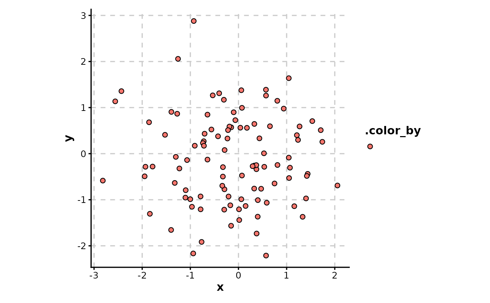
# Highlight specific points
ScatterPlot(data, x = "x", y = "y", highlight = "x > 1 & y > 0")
 # Size by numeric column
ScatterPlot(data, x = "x", y = "y", size_by = "size_val")
# Size by numeric column
ScatterPlot(data, x = "x", y = "y", size_by = "size_val")
 # Color by numeric column with continuous gradient
ScatterPlot(data, x = "x", y = "y", color_by = "size_val", palette = "RdYlBu")
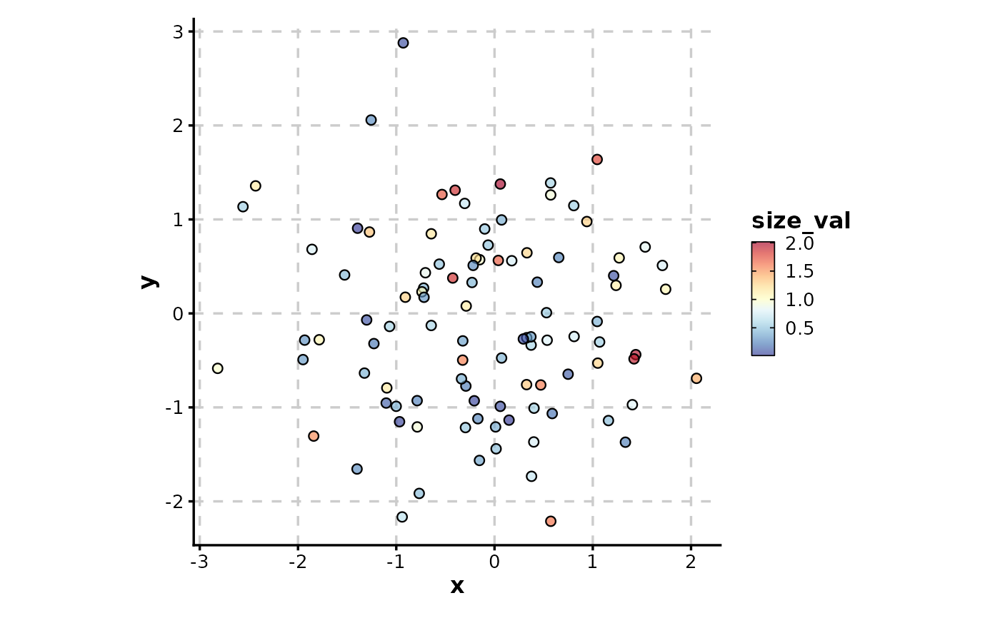
# Color by categorical column
ScatterPlot(data, x = "x", y = "y", color_by = "category")
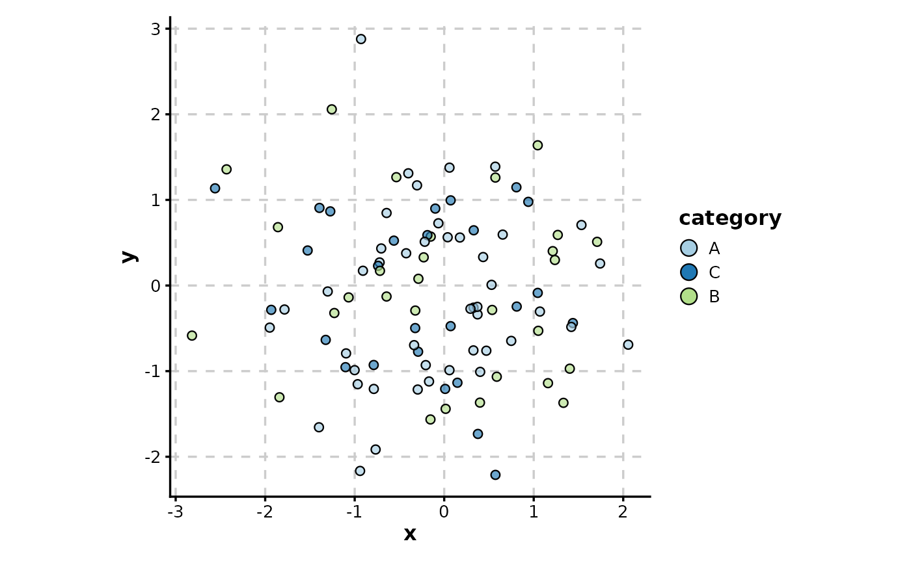
# Combine size and color mapping with custom border
ScatterPlot(data,
x = "x", y = "y", size_by = "size_val", color_by = "category",
border_color = "black"
)
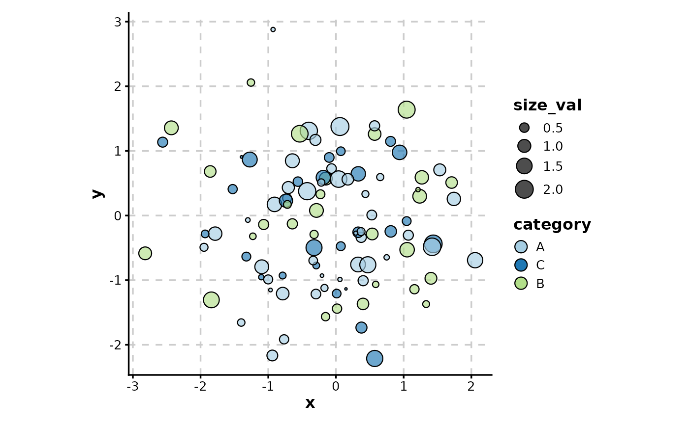
# Border color matches fill color (for cohesive look)
ScatterPlot(data,
x = "x", y = "y", color_by = "category",
border_color = TRUE
)
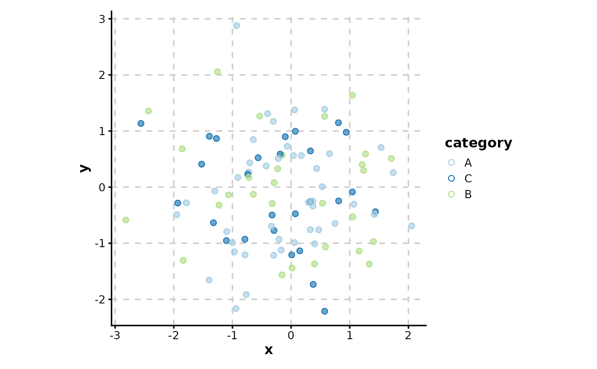
# Use shape without fill (solid points)
ScatterPlot(data,
x = "x", y = "y", color_by = "category",
shape = 16, palette = "Set1"
)
# Color by numeric column with continuous gradient
ScatterPlot(data, x = "x", y = "y", color_by = "size_val", palette = "RdYlBu")
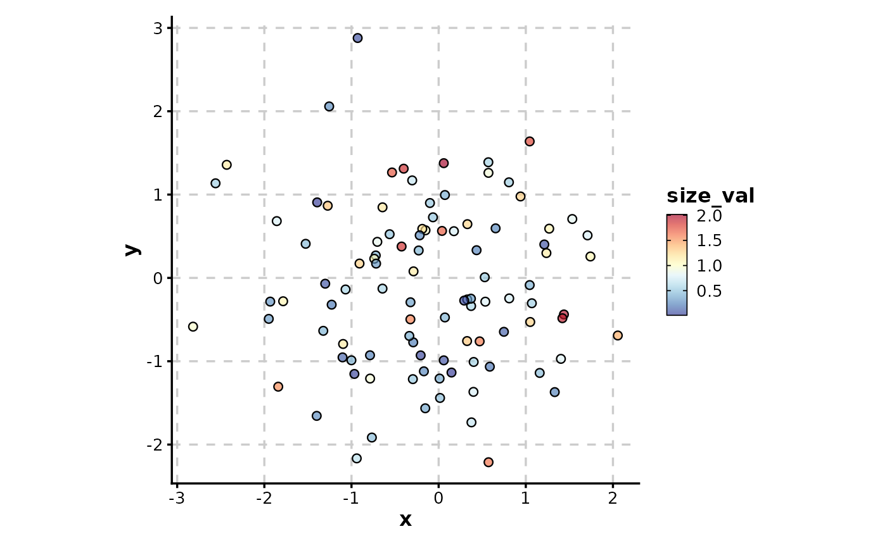
# Color by categorical column
ScatterPlot(data, x = "x", y = "y", color_by = "category")
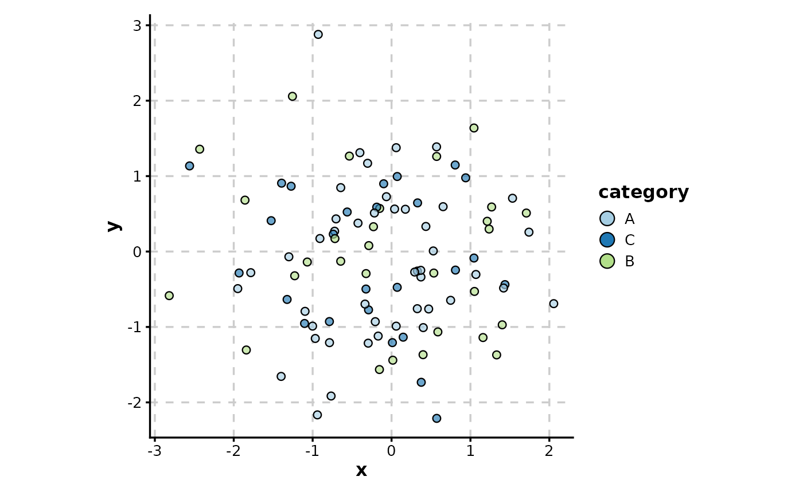
# Combine size and color mapping with custom border
ScatterPlot(data,
x = "x", y = "y", size_by = "size_val", color_by = "category",
border_color = "black"
)
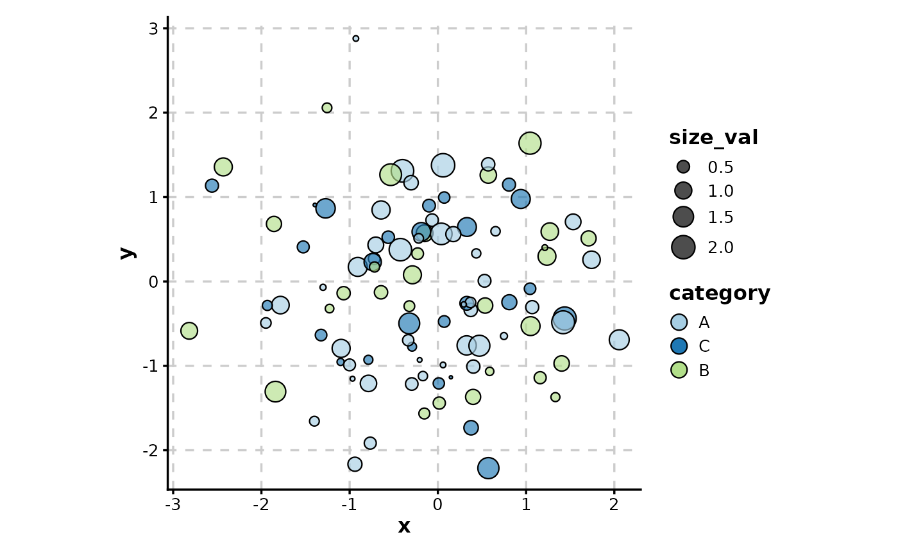
# Border color matches fill color (for cohesive look)
ScatterPlot(data,
x = "x", y = "y", color_by = "category",
border_color = TRUE
)
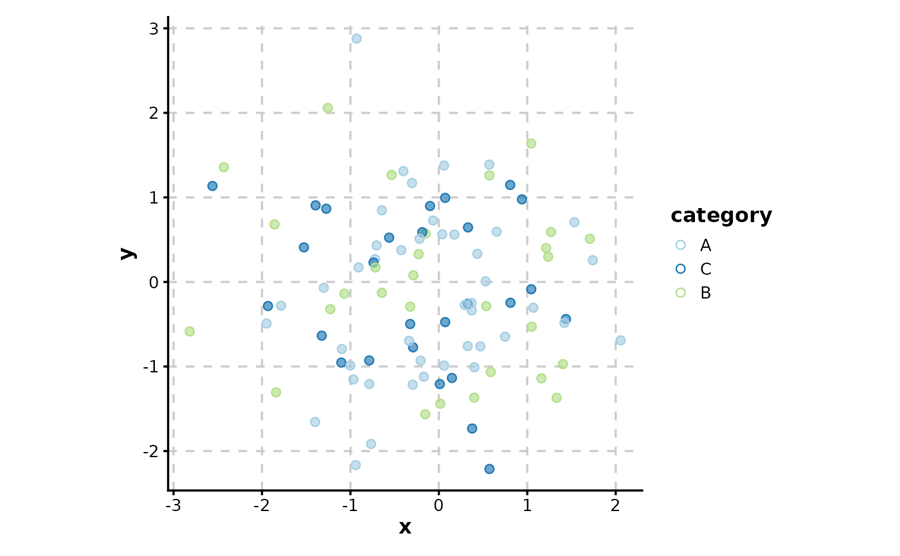
# Use shape without fill (solid points)
ScatterPlot(data,
x = "x", y = "y", color_by = "category",
shape = 16, palette = "Set1"
)
 # Split by group to create separate panels
ScatterPlot(data,
x = "x", y = "y", color_by = "category",
split_by = "group", combine = TRUE
)
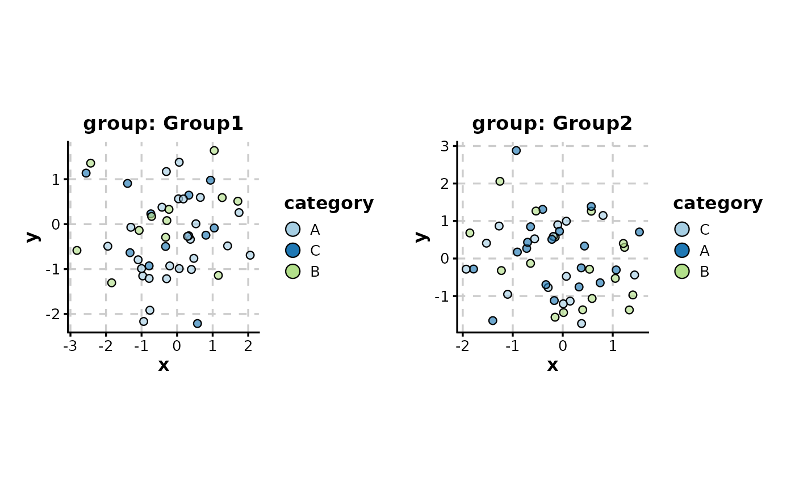
# Facet by group (alternative to split_by)
ScatterPlot(data, x = "x", y = "y", color_by = "category", facet_by = "group")
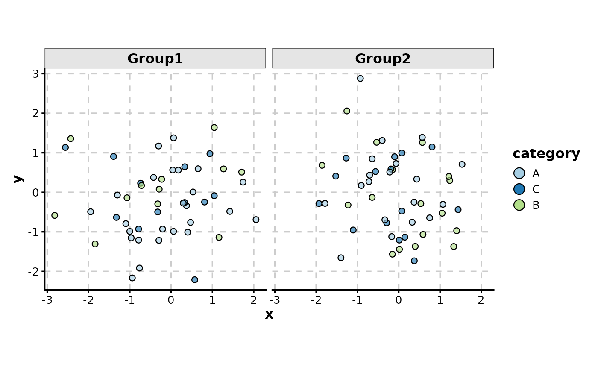
# Log transformation of axes
data_pos <- data.frame(
x = 10^rnorm(100, 2, 1),
y = 10^rnorm(100, 3, 0.5)
)
ScatterPlot(data_pos, x = "x", y = "y", xtrans = "log10", ytrans = "log10")
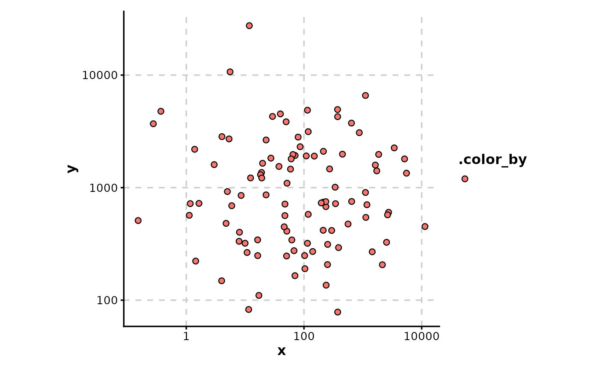
# Split by group to create separate panels
ScatterPlot(data,
x = "x", y = "y", color_by = "category",
split_by = "group", combine = TRUE
)
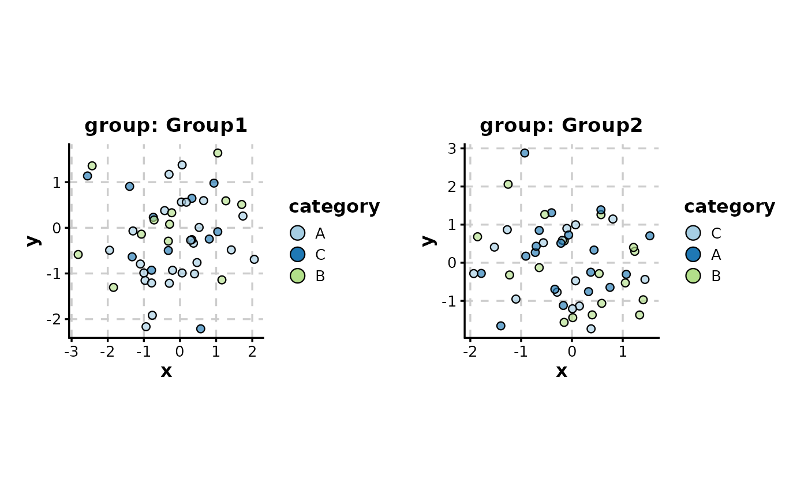
# Facet by group (alternative to split_by)
ScatterPlot(data, x = "x", y = "y", color_by = "category", facet_by = "group")
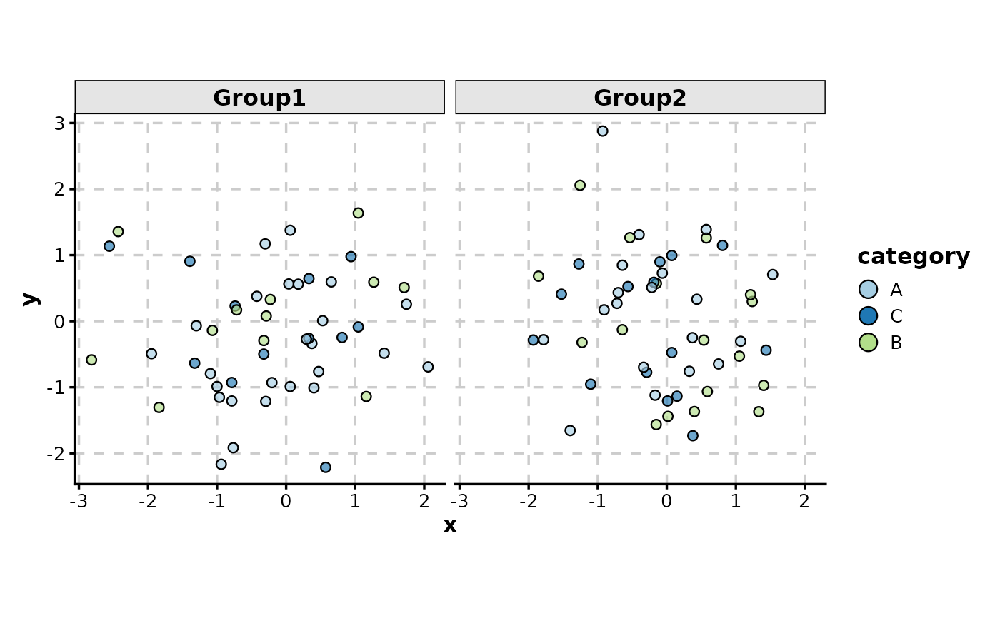
# Log transformation of axes
data_pos <- data.frame(
x = 10^rnorm(100, 2, 1),
y = 10^rnorm(100, 3, 0.5)
)
ScatterPlot(data_pos, x = "x", y = "y", xtrans = "log10", ytrans = "log10")
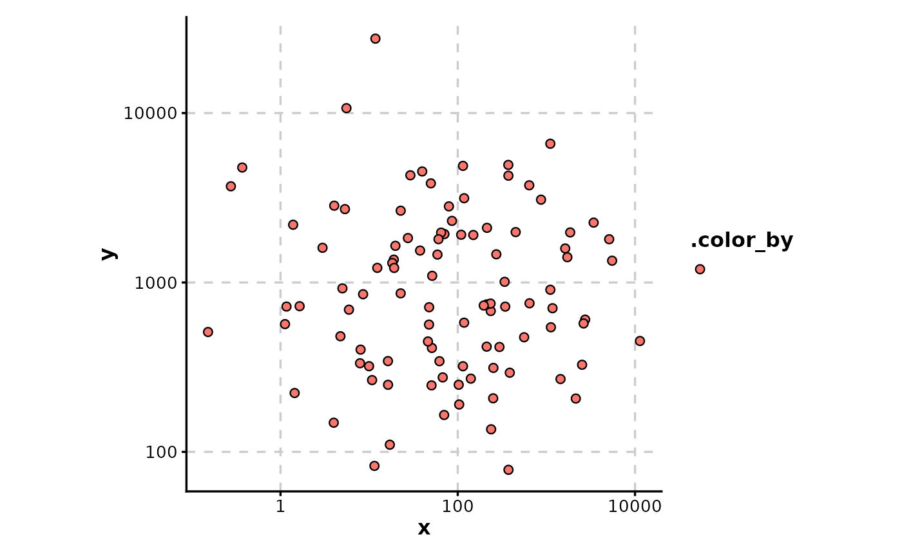